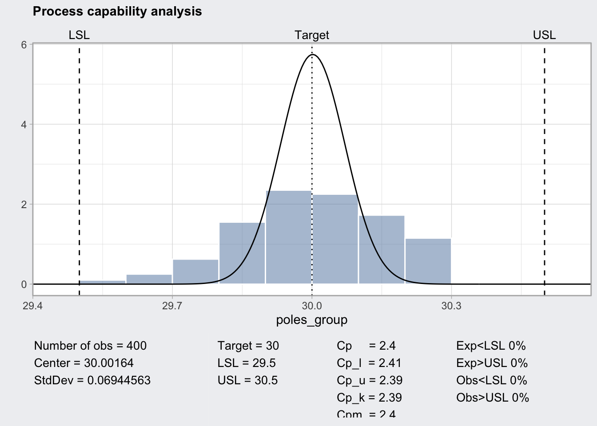

── Attaching packages ─────────────────────────────────────── tidyverse 1.3.2 ──
✔ ggplot2 3.3.6 ✔ purrr 0.3.4
✔ tibble 3.1.8 ✔ dplyr 1.0.10
✔ tidyr 1.2.1 ✔ stringr 1.4.1
✔ readr 2.1.2 ✔ forcats 0.5.2
── Conflicts ────────────────────────────────────────── tidyverse_conflicts() ──
✖ dplyr::filter() masks stats::filter()
✖ dplyr::lag() masks stats::lag()
Package 'qcc' version 3.0
Type 'citation("qcc")' for citing this R package in publications.Cp_Cpk_example
SPC
Salam, This is working example for my articles series on Statistical Process Control (SPC), for the original series check this post linkedin post
The example
We assume the following example: Contractors will install light poles. the spacing between poles are variable of interest/ Critical To Quality (CTQ), too much/little space between the poles will effect the lighting.
Target: 30 m
USL: 30.5 m
LSL: 29.5 m
there are 4 contractors.
Preparation
P.Step-1: Load packages
P.Step-2: generate the data
This is not part of the six sigma, as the data usually coming from the actual data from the process.
poles <-
tibble(distance = c(rnorm(100, 30.0, 0.01),
rnorm(100, 30.0, 0.1),
rnorm(100, 30.2, 0.01),
rnorm(100, 29.8, 0.1)),
group = rep(1:4, each = 100))Let’s have a look on the data
knitr::kable(head(poles))| distance | group |
|---|---|
| 29.99703 | 1 |
| 30.00208 | 1 |
| 29.99655 | 1 |
| 30.01236 | 1 |
| 29.98263 | 1 |
| 30.01664 | 1 |
As you can see we have printed the top 10 (default head behavior) result in the data frame, however there is a merit in taking samples from each group, we can achieve this using the code below.
poles |>
group_by(group) |>
slice_sample(n = 3) |> knitr::kable()| distance | group |
|---|---|
| 30.00981 | 1 |
| 29.98588 | 1 |
| 30.01673 | 1 |
| 29.87952 | 2 |
| 29.90323 | 2 |
| 29.97592 | 2 |
| 30.20114 | 3 |
| 30.20117 | 3 |
| 30.19599 | 3 |
| 29.76195 | 4 |
| 29.84824 | 4 |
| 29.72203 | 4 |
Analysis
A.Step-1: add basic statstics
create a data frame with mean and standard deviation.
poles_stat <-
poles |>
group_by(group) |>
summarise(mean = mean(distance),
sd = sd(distance)) |>
ungroup()A.Step-2: Visual check
ggplot(poles, aes(x= distance, fill= as.factor(group))) +
geom_histogram(binwidth = 0.01) +
facet_grid(facets = "group") +
# geom_vline(xintercept = 30) +
geom_vline(data = poles_stat, aes(xintercept = mean), linetype = 2)+
geom_vline(xintercept = c(29.5, 30.5), color = "red")+
scale_x_continuous(limits = c(29.4, 30.6))Warning: Removed 8 rows containing missing values (geom_bar).visual check
ggplot(poles, aes(x= as.factor(group) , y= distance)) +
geom_boxplot() +
geom_jitter(alpha = 0.2, height = 0) +
geom_path(data = poles_stat, aes(x= group, y= mean), color = "steelblue") +
geom_point(data = poles_stat, aes(x= group, y= mean), color = "firebrick4") +
geom_hline(yintercept = c(29.5, 30.5), color = "firebrick3") +
labs(x = "distance", y = "group") +
theme_bw()Anova and Tukey HSD test
anova_model <- aov(distance ~ as.factor(group), data = poles)
anova_model |> summary() Df Sum Sq Mean Sq F value Pr(>F)
as.factor(group) 3 7.617 2.5390 527.1 <2e-16 ***
Residuals 396 1.907 0.0048
---
Signif. codes: 0 '***' 0.001 '**' 0.01 '*' 0.05 '.' 0.1 ' ' 1anova_model |> TukeyHSD() Tukey multiple comparisons of means
95% family-wise confidence level
Fit: aov(formula = distance ~ as.factor(group), data = poles)
$`as.factor(group)`
diff lwr upr p adj
2-1 -0.004980812 -0.03030298 0.02034135 0.9572866
3-1 0.198186260 0.17286410 0.22350843 0.0000000
4-1 -0.192008704 -0.21733087 -0.16668654 0.0000000
3-2 0.203167072 0.17784491 0.22848924 0.0000000
4-2 -0.187027892 -0.21235006 -0.16170573 0.0000000
4-3 -0.390194965 -0.41551713 -0.36487280 0.0000000poles_group <- qccGroups(data = poles, distance, group)
q1 <- qcc(poles_group, type = "xbar", sizes = 100)
plot(q1)pq <- processCapability(q1, spec.limits = c(29.5, 30.5), target = 30)
plot(pq)
### six sigma package
SixSigma::ss.study.ca(xST = poles$distance[101:200],
xLT = poles$distance,
LSL = 29.5,
USL = 30.5,
Target = 30)poles |>
group_by(group) |>
slice_sample(n = 3)# A tibble: 12 × 2
# Groups: group [4]
distance group
<dbl> <int>
1 30.0 1
2 30.0 1
3 30.0 1
4 30.0 2
5 30.2 2
6 30.0 2
7 30.2 3
8 30.2 3
9 30.2 3
10 29.7 4
11 29.9 4
12 29.8 4